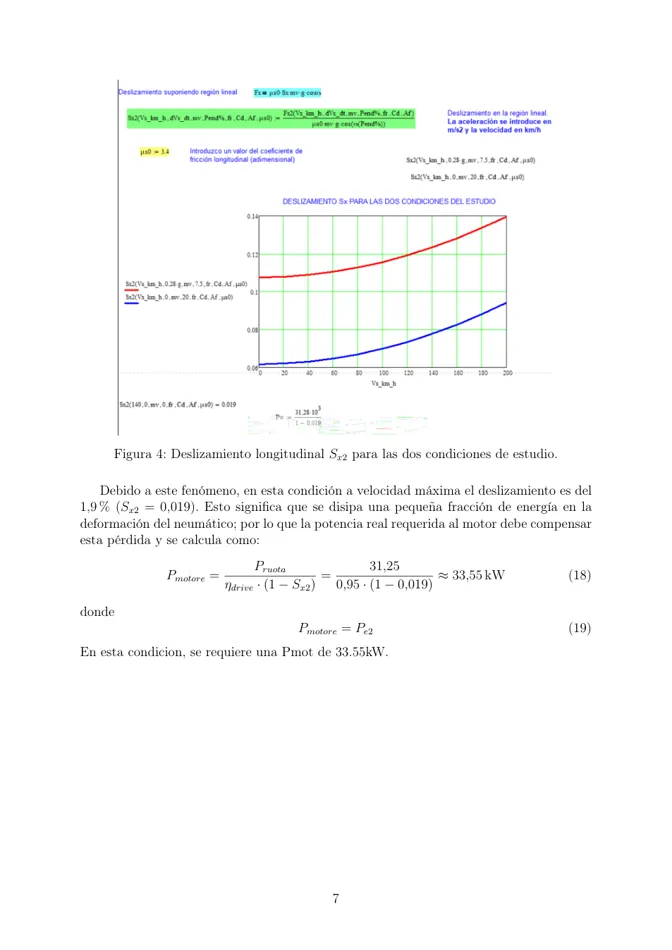

Project objective
In a group design project at Universitat Politècnica de València, we worked on an electric vehicle powertrain architecture under defined constraints for vehicle mass, acceleration, top speed and driving range.
The study combines vehicle longitudinal dynamics, required motor torque and power, energy consumption, traction-system component sizing and system integration.

Design workflow
01
Vehicle dynamics
Estimate propulsion demand from aerodynamic, rolling, gravitational and inertial forces.
02
Motor and mechanical drive
Use torque, power and speed constraints to select and assess a suitable motor and transmission.
03
Energy requirement
Estimate energy consumption over a WLTP drive cycle using Mathcad-based calculations.
04
Power electronics and battery
Examine inverter, DC/DC converter, power control and battery specifications.
05
Validation and integration
Use electromagnetic FEM-related analysis, MATLAB plots and CAD integration to discuss design feasibility.
Design decisions
- Analysed an axial-flux traction motor candidate, EMRAX 188.
- Compared expected motor demands against continuous and peak motor limits.
- Considered limitations of a fixed-ratio transmission in the studied configuration.
- Evaluated battery energy against simulated WLTP requirements.
This is a coursework design and simulation study. Component sizing and efficiency estimates are model-based, not full-vehicle test-bench results.